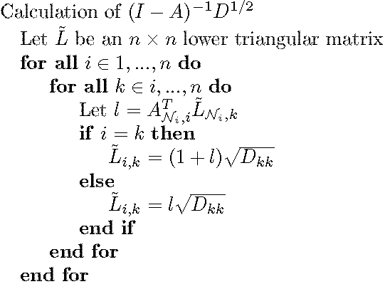
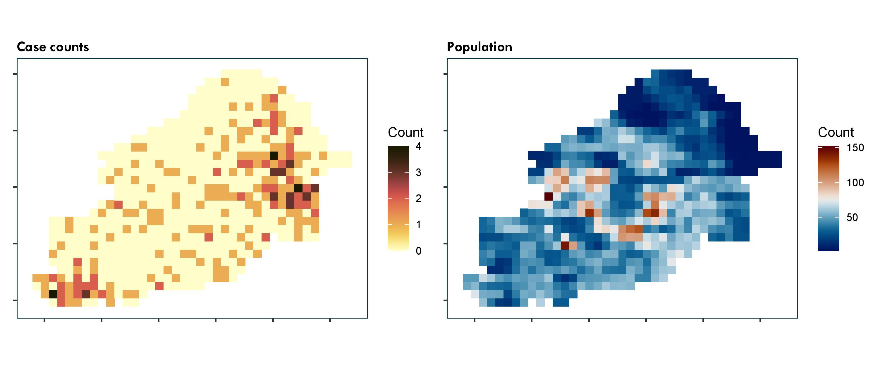
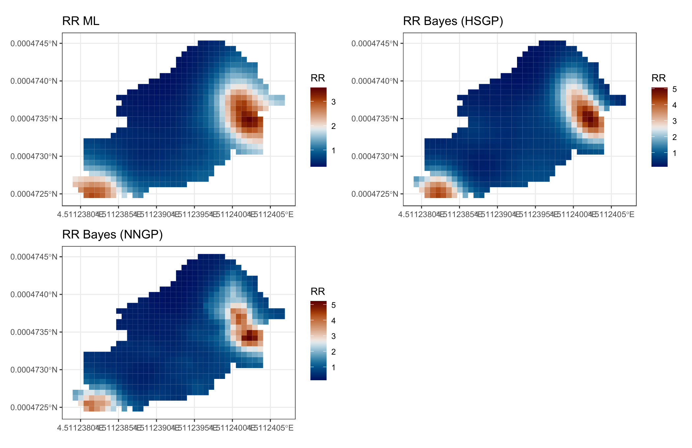
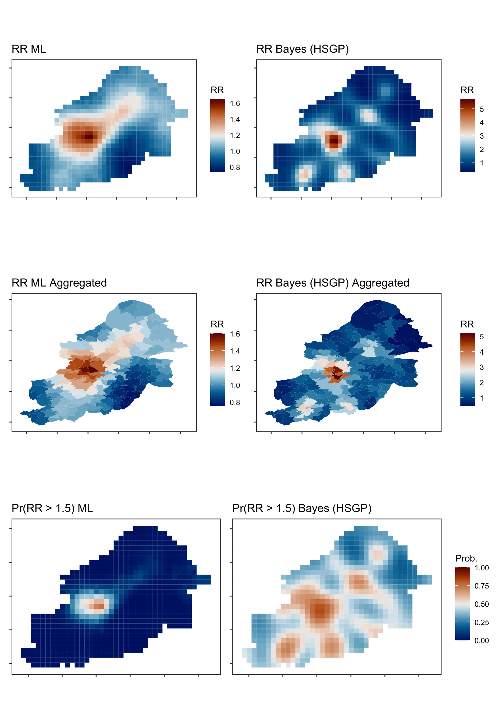
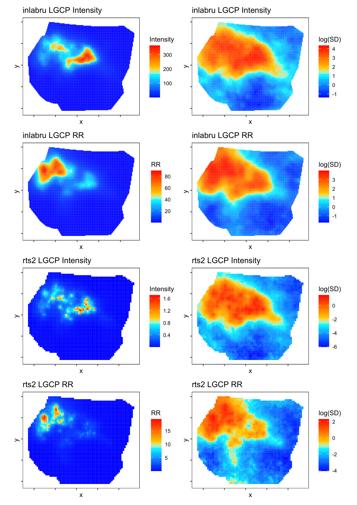
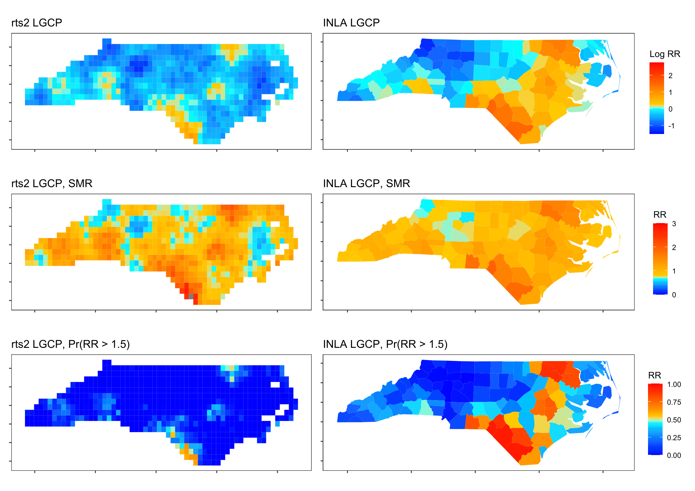

Log Gaussian Cox Process (LGCP) models are a key method for disease and other types of surveillance, and provide a means of predicting risk across an area of interest based on spatially-referenced and time-stamped case data. However, these models can be difficult to specify and computationally demanding to estimate. For many surveillance scenarios we require results in near real-time using routinely available data to guide and direct policy responses, or due to limited availability of computational resources. There are limited software implementations available for this real-time context with reliable predictions and quantification of uncertainty. The package provides a range of modern Gaussian process approximations and model fitting methods to fit the LGCP, including estimation of covariance parameters, using both Bayesian and stochastic Maximum Likelihood methods. The package provides a suite of data manipulation tools. We also provide a new implementation to estimate the LGCP when case data are aggregated to an irregular grid such as census tract areas.
The statistical analysis of geolocated and possibly time-stamped data representing cases of a phenomenon of interest can help identify areas with a high probability of high or growing risk. In this article, we focus primarily on disease surveillance, but other applications include social policy, crime, ecological, geological, or other point process phenomena. In the context of disease surveillance, prevalence mapping surveys are a rigorous method for measuring disease risk and conduct a 0/1 test on a sample from a population in a given area to predict the spatial distribution of risk (Diggle and Giorgi 2016). Recent examples include the mapping of seroprevalence during the SARS-CoV-2 pandemic (e.g. Riley et al. (2020)). However, such studies require significant time and resources. In many contexts there is a need for more rapid analyses of case data to be able to quickly identify and respond to emerging disease outbreaks. Again, SARS-CoV-2 provides a good example (Watson et al. 2021), but in many low- and middle-income country settings identifying emerging clusters of diseases like cholera, malaria, or influenza can facilitate targeted intervention to prevent the development of an epidemic (e.g. Ratnayake, Finger, Edmunds, et al. (2020; Ratnayake, Finger, Azman, et al. 2020)). Beyond emergency applications, reliable quantification of disease risk across an area of interest using routine data provides a useful tool for public health surveillance and research. Obtaining predictions in a reasonable amount of time without using excessive computational resources can facilitate their adoption.
Many healthcare and public health systems collect finely spatially-resolved and time-stamped data that can be used to monitor disease epidemiology. These data may include daily hospital admissions, positive tests, or calls to public health telephone services (Diggle et al. 2005). Case data are often also provided as counts at a spatially aggregated level, such as census tracts. Geospatial statistical models provide a principled basis for generating predictions of disease epidemiology and its spatial and temporal distribution from these data.
The package provides data manipulation and model fitting methods for when these data can be assumed to be a realisation from a spatio-temporal point process over the area of interest. A point, such as the residential address of a hospital admission on a particular date, is assumed to be more likely to be observed in areas of higher risk than lower risk. Analysis of these data can provide probabilistic predictions about the underlying disease risk and be used to quantify our uncertainty about the presence of “hotspots”.
A growing use case for spatio-temporal point process models is “real-time” disease surveillance that uses a stream of real-time data, such as hospital admissions, to provide rapid feedback to public health authorities. However, geospatial models can be computationally intensive and slow to run, and they can scale poorly with the size of the data. ‘Fast’ methods like kernel-based mapping require often difficult selection of bandwidth parameters and may have less reliable quantification of uncertainty. provides a range of Gaussian process approximations and approximate inference, including both Bayesian and Frequentist approaches, to support faster and more scalable analyses for real-time scenarios. We first describe the statistical models and model fitting and other relevant packages for R, and then provide a discussion of the use of the package and generation and interpretation of outputs.
Our statistical model is a Log Gaussian Cox process (LGCP) (Diggle et al. 2013), whose realization is observed on the Cartesian area of interest \(A \subset \mathbb{R}^2\) and time period of interest \(T \subset \mathbb{N}\) (we assume discrete time periods). The resulting data are realisations of an inhomogeneous Poisson process with stochastic intensity function \(\{\lambda(s,t):s\in A, t\in T\}\). The number of cases occurring in any locally finite random set \(S \subseteq A\) is Poisson distributed conditional on \(\lambda(s,t)\): \[\begin{equation} Y(S,t) \sim \text{Poisson} \left( \int_S \lambda(s,t)ds \right) \end{equation}\] The intensity is decomposed as the log-linear model: \[\begin{equation} \lambda(s,t) = r(s,t)\text{exp}(X(s,t)\gamma + Z(s,t)) \end{equation}\] where \(r(s,t)\) is a spatially or spatio-temporally varying Poisson offset, typically the population density. \(X(s,t)\) is a length \(Q\) row vector of spatially, temporally, or spatio-temporally varying covariates including an intercept and \(\{ Z(s,t): s\in A, t\in T \}\) is a latent field.
We use an auto-regressive specification for the latent field: \[\begin{align} \begin{split} \label{eq:z} Z(s,1) =& (1+\rho^2)^{-1}\mathcal{Z}_1(s)\\ Z(s,t) =& \rho Z(s,t-1) + \mathcal{Z}_t(s) \text{ for } t>1 \end{split} \end{align} \tag{1}\] where \(\rho\) is the auto-regressive parameter. This specification, sometimes referred to as a “spatial innovation” model, facilitates computationally efficient model fitting as we describe in the subsequent section. We include both Bayesian and maximum likelihood model fitting approaches in the package and, depending on the paradigm, the spatial innovation term \(\{ \mathcal{Z}_t(s): s\in A \}\) is given a Gaussian process prior distribution, or is itself a Gaussian process. In both cases, the realisations of \(\mathcal{Z}_t(s)\), which we notate as \(\mathbf{z}\) are multivariate Gaussian distributed with mean zero and covariance \(\Sigma\). We use a minimally parameterised covariance function for the Gaussian process to define the elements of \(\Sigma\): \[\begin{equation} \text{cov}(\mathcal{Z}_t(s),\mathcal{Z}_t(s')) = \sigma^2 h(||s-s'||; \phi) \end{equation}\] where \(||.||\) is the L2-norm. The package includes, for example, the squared exponential covariance function \[\begin{equation} h(||s-s'||;\phi) = \text{exp}\left( \frac{-(||s-s'||)^2}{\phi^2} \right) \end{equation}\] and the exponential covariance function \[\begin{equation} h(||s-s'||;\phi) = \text{exp}\left( \frac{-||s-s'||}{\phi} \right) \end{equation}\] where \(\phi\) is the spatial range (or length scale) parameter.
The LGCP is complex to estimate as the marginal likelihood does not have a closed form solution. We include methods and approximations where there do not currently exist implementations in other software packages, which are discussed in Section 7.
Model fitting in this package uses the standard practice of dividing the area of interest into a regular grid (Diggle et al. 2013; Taylor et al. 2013, 2015) with grid cells \(S_i:i = 1,...,n\). The size of the grid cells should permit the assumption that the latent field \(Z\) is approximately constant within each cell. The counts in each of the \(n\) grid cells comprise our data \(\mathcal{D} = \{Y(S_i,t):i=1,..,n;t=1,...,T\}\) such that our model is: \[\begin{align} \begin{split} \label{eq:fullmodel} Y(S_i,t) &\sim \text{Poisson}(\lambda(S_i,t)) \\ \lambda(S_i,t) &= r(S_i,t)\text{exp}(X(S_i,t)\gamma + Z(S_i,t)) \end{split} \end{align} \tag{2}\] where \(Z\) is as specified in Equation ((1)). For the Bayesian approaches we also require specification of priors and hyperpriors for the remaining model parameters as we discuss below.
For a given data set \(\mathcal{D}\), we write the \(nT\)-length vector of realisations of the Gaussian process model as \(\mathbf{z}\). We can then write the likelihood of the model parameters as \[\begin{equation} \label{eq:lgcplik} L(\gamma,\theta \vert \mathcal{D}) = \int \prod_{i=1}^n \prod_{t=1}^T f_{Y \vert z}(Y(S_i,t) \vert \gamma,\mathbf{z}) dF_{z\vert \theta }(\mathbf{z}\vert \theta) \end{equation} \tag{3}\] where \(f_{Y\vert z}\) is the Poisson probability density function with intensity given in ((2)) and \(f_{z\vert \theta}\) is the multivariate Gaussian density with parameters \(\theta = [ \sigma^2, \phi, \rho ]\). The components of the log-likelihood are therefore: \[\begin{align} \begin{split} \label{eq:mvnll} \log(f_{Y \vert z}(Y(S_i,t) \vert \gamma,\mathbf{z})) &= Y(S_i,t)\eta(S_i,t) - \lambda(S_i,t) - \log(Y(S_i,t)!) \\ \log(f_{Z \vert \theta }(\mathbf{z} \vert \theta)) &= -\frac{nT}{2}\log{(2\pi)} - \frac{1}{2}\log(|\Sigma|) - \frac{1}{2}\mathbf{z}^T \Sigma^{-1} \mathbf{z} \end{split} \end{align} \tag{4}\] where \(\eta(S_i,t) = \log(r(S_i,t)) + X(S_i,t)\gamma + Z(S_i,t)\). The autoregressive specification of the latent field means we can partially reduce the complexity of the log likelihood. We can write: \[\begin{equation*} \Sigma = P \otimes \Sigma_0 \end{equation*}\] where \(\Sigma_0\) is the covariance matrix for a single time period and \[\begin{equation*} P = \begin{bmatrix} 1 & \rho & \rho^2 & \hdots & \rho^T \\ \rho & 1 & \rho & \hdots & \rho^{T-1} \\ \vdots & & \ddots & \vdots & \vdots \\ \rho^T & \rho^{T-1} & \rho^{T-2} & \hdots & 1 \end{bmatrix} \end{equation*}\] Letting \(\mathbf{z}_{[t]}\) refer to the elements of \(\mathbf{z}\) for time period \(t\) and \(\mathbf{v}\) be an \(n \times T\) matrix formed by stacking the elements of \(\mathbf{z}\) into columns with column \(t\) equal to \(\mathbf{z}_{[t]}\), we can then write: \[\begin{align*} \mathbf{z}^T \Sigma^{-1} \mathbf{z} &= \mathbf{z}^T (P \otimes \Sigma_0)^{-1} \mathbf{z}\\ &= \mathbf{z}^T \text{Vec}(\Sigma_0^{-1}\mathbf{v}P^{-1}) \\ &= \sum_t \mathbf{z}_{[t]} \Sigma_0^{-1} \Tilde{\mathbf{v}}_{[t]} \end{align*}\] where \(\Tilde{\mathbf{v}} = \mathbf{v}P^{-1}\). Similarly \(\log{(\vert \Sigma \vert)} = n\log{(\vert P \vert)} + T\log{(\vert \Sigma_0 \vert)}\) Computational time with this approach is therefore linear in the number of time periods. However, evaluation of \(\Sigma_0^{-1}\) is still computationally demanding and scales as \(O(n^3)\), which may still be prohibitive for many real-time surveillance applications.
The models discussed so far have assumed that the precise location of each case is known. However, in many cases we will have instead case counts aggregated to census or administrative areas for reasons such as preserving anonymity. These areas are almost always irregularly shaped and have a large variability in area. As a result, we cannot necessarily assume that the underlying latent process is approximately constant within each area, as we do with the regular lattice, which can cause bias. We can instead extend the LGCP model described above to account for the irregular areas onto which case counts are aggregated.
Similar to Li, Brown, Gesink, et al. (2012), we notate the count data for this ‘region’ model as \(Y(R_j,t)\) where \(R_j\) is the \(j\)th region (i.e. irregular area) of \(r\) total regions. The intersection areas between the regions and the computational grid are \(Q_{ij} = R_j \cap S_i\) where there are \(q\) non-empty intersection areas. Letting \(\boldsymbol{\lambda}_s\) be the \(n \times T\) vector of grid-level intensities in ((2)), and \(\boldsymbol{y}_r\) be the \(r \times T\) vector of region level outcome variables. We consider models of the form: \[\begin{equation} \boldsymbol{y}_r \sim \text{Poisson}(W\boldsymbol{\lambda}_s) \end{equation}\] where \(W\) is a weight matrix with elements in the \(j\)th row and \(i\)th column of \(W_{ji} = \frac{\vert \vert Q_{ij} \vert \vert}{\vert \vert S_i \vert \vert}\). This formulation of the spatially aggregated model only uses the information that the intensities in the regions are the sums of the intersecting grid cells. The intensity for cell \(i\) is: \[\begin{equation} \label{eq:intersectionintens} \lambda_{s,i} = \exp\left(X_s(S_i,t)\gamma + Z(S_i,t)\right) \end{equation} \tag{5}\] Population density information can be added from either the region or cell level by appropriately multiplying the rows or columns, respectively.
Li, Brown, Gesink, et al. (2012), building on work in Li, Brown, Rue, et al. (2012), describe a data augmentation scheme for estimating the LGCP with aggregated case data. Their approach models the counts at the intersection level. As the locations of each case within a region are not known, and so it is not known which computational grid cell to add them to, they assign a case to a grid cell within the region with probability proportional to the \(w_{ij} \exp\left( Z(S_i,t) \right)\) on each iteration of the MCMC sampling and then model the intersection intensities. Despite proposing an INLA approach to modelling the random field, the method is computationally intensive given the number of intersections and the need for a data simulation step. In we instead aim to model the counts at the region level directly and instead aggregate the intensities of the intersections, which is a more efficient method of sampling from or fitting an equivalent model. We assume that the population density and any covariates for the regions are constant throughout the area; the model is then amenable to the fitting strategies discussed in this article.
For maximum likelihood estimation we use the algorithm described in Watson et al. (2026). We provide a brief overview of the algorithm here. The method is a Markov Chain Monte Carlo Maximum Likelihood (MCML) algorithm, which is an expectation-maximisation type algorithm. The marginal log-likelihood of the model parameters includes an intractable integral averaging over the latent effect terms. To approximate this algorithm, MCML algorithms use Monte Carlo samples of the latent effects to generate estimates of the averages. MCML algorithms for mixed models are described by McCulloch (1997) and implemented for GLMMs in general in the package for R, which we build on for model fitting in this package. The MCML algorithm has three steps that are implemented on each iteration. On the \(k\)th iteration:
Sample \(m_k\) latent effects \(\mathbf{z}^{(k)}\) from the distribution \(\mathbf{z}|Y\) using importance sampling, with a Gaussian proposal distribution.
Update the estimates \(\hat{\gamma}^{(k)}\) from the likelihood of \(Y\) conditional on \(\mathbf{z}^{(k)}\) using a Newton-Raphson step averaging the gradient and Hessian over the latent effect samples.
Update the estimates of the covariance parameters \(\hat{\theta}^{(k)}\) using a Newton-Raphson step averaging the gradient and Hessian over the latent effect samples.
The steps are then repeated until convergence, see below.
MCML algorithms are subject to Monte Carlo error so do not converge to a single point estimate, but reach a stationary, post-convergence phase where the log-likelihood does not improve, on average. Previously proposed stopping criteria for these algorithms, such as Caffo et al. (2005), consider a null hypothesis test that the running mean of the difference in log-likelihood values is zero. However, passing such a test may require a relatively large number of post-convergence iterations, which may be computationally burdensome for spatial models. Watson et al. (2026) propose a different stopping criterion for stochastic gradient descent algorithms for GLMMs. In particular, if the difference in successive likelihood values is: \[\begin{equation*} \Delta \mathcal{L}(k | k - 1) = \mathcal{L}^{(k)}(\hat{\gamma}^{(k)},\hat{\theta}^{(k)}) - \mathcal{L}^{(k)}(\hat{\gamma}^{(k-1)},\hat{\theta}^{(k-1)}) \end{equation*}\] with \(\mu_\Delta\) the mean difference. Then the algorithm is halted based on the Bayes Factor: \[\begin{equation*} BF = \frac{Pr(\mu_\Delta \leq 0 | \mathcal{D}_t)}{Pr(\mu_\Delta > 0 | \mathcal{D}_t)} = \frac{1 - p_t}{p_t} \frac{1 - \pi_t}{\pi_t} \end{equation*}\] where \(\mathcal{D}_t\) is the values of the difference in log-likelihood values from the preceding recent iterations, \(p_t\) is the one-sided p-value from a null hypothesis test of \(H_0:\mu_\Delta > 0\) versus \(H_1:\mu_\Delta \leq 0\) and \(\pi_t\), which is the prior probability \(Pr(\mu_\Delta \leq 0)\) at iteration \(t\). The prior probability is determined by a Weibull model with expected number of iterations until convergence of \(k_0\). Thus, the stopping criterion is specified according to the threshold for \(BF\) and values of \(k_0\) and the history length.
Further details of the model fitting algorithm are provided in Watson et al. (2026). We provide a discussion of extensions to the algorithm for spatially aggregated data here. The first step is to update the proposal distribution of the latent effects, the posterior mean of which is updated using an iteratively re-weighted least squares procedure. The random effects are sampled on a transformed scale \(\boldsymbol{v}\sim N(0,I)\). Letting \(L\) be the Cholesky decomposition of \(\Sigma = LL^T\), \(\boldsymbol{\lambda}_r = W \boldsymbol{\lambda}_s\), \(\boldsymbol{\psi}\) be a vector with \(i\)th element \(y_i/\lambda_{r,i}\), then the update to the posterior mean of \(\boldsymbol{v}\), \(\bar{\boldsymbol{v}}\) is: \[\begin{align*} C &= diag(\boldsymbol{\lambda}_r^{-\frac{1}{2}}) Wdiag(\boldsymbol{\lambda}_s)L\\ \boldsymbol{a} &= C^TC \bar{\boldsymbol{v}} + (Wdiag(\boldsymbol{\lambda}_s)L)^T(\boldsymbol{\psi}- \mathbf{1})\\ \bar{\boldsymbol{v}}_{new} &= \boldsymbol{a}- C^T(CC^T+I)^{-1}C \boldsymbol{a} \end{align*}\] which is repeated iteratively until convergence. The computational complexity of this step is \(O((rT)^3)\). To generate a Monte Carlo sample from this distribution we draw \(\mathbf{v}_a,\mathbf{v}_b \sim N(0,I)\), then generate \(\mathbf{v_c} = \mathbf{v}_a + C^T \mathbf{v}_b\), and \(\mathbf{v}_{sample} = \mathbf{v_c} - C^T (CC^T + I)^{-1}C\mathbf{v_c} + \bar{\boldsymbol{v}}\). Importance weights are calculated for each sample \(w_m\) for \(m = 1,...M\).
The updating step for \(\beta\) uses a Newton-Raphson step with estimated gradient: \[\begin{equation*} \boldsymbol{g}_\beta = \sum_{m=1}^M w_m X^T diag(\boldsymbol{\lambda}_s) W^T (\boldsymbol{\psi} - \mathbf{1}) \end{equation*}\] and Hessian: \[\begin{equation} \label{eq:hessb} H_\beta = \sum_{m=1}^M w_m X^T diag(\boldsymbol{\lambda}_s) W^T diag(\boldsymbol{\lambda}_r ^{-1})W diag(\boldsymbol{\lambda}_s) X \end{equation} \tag{6}\] so that \(\hat{\beta}_{new} = \hat{\beta} + H_\beta^{-1}\boldsymbol{g}_\beta\). The updating step for the covariance parameters is the same as the standard GLMM algorithm.
We report the usual generalized least squares standard errors. For the region model, the fixed effect parameter standard errors are generated from the inverse of the negative of the matrix in ((6)).
There are several approaches to estimating the LGCP in a Bayesian framework. Letting \(\Theta = [\beta, \theta, \sigma, Z]\) represent all the model parameters, the Bayesian approach aims to draw samples from the posterior \[\begin{equation*} f_{\Theta|\mathcal{D}}(\Theta|\mathcal{D}) \propto f_{\mathcal{D}|\Theta}(\mathcal{D}|\Theta) f_\Theta(\Theta) \end{equation*}\] Markov Chain Monte Carlo (MCMC) methods are often used. In the context of the LGCP, there has been some discussion of the choice of the proposal density for the Metropolis-Hastings algorithm. Møller et al. (1998) propose a Langevin kernel, which is known as the Metropolis-adjusted Langevin algorithm (MALA). MALA is a special case of Hamiltonian Monte Carlo (HMC), which uses Hamiltonian dynamics to construct proposals for the Metropolis-Hastings algorithm (Carpenter et al. 2017). MALA was used by (Taylor et al. 2013) for fitting an LGCP. HMC is potentially more efficient than MALA though (Teng et al. 2017).
MCMC algorithms have the advantage of providing consistent estimation of various characteristics of the posterior distribution, including well calibrated probabilities. However, it is computationally intensive, and so may provide a further limit on the granularity of predictions in settings where time is a constraint. Several deterministic methods for approximate Bayesian inference have been proposed to try to overcome this limitation. One such method is Variational Bayes (VB) using an approximating density \(r(\Theta; \phi)\) parameterised by \(\phi\). VB minimises the Kullback-Leibler (KL) divergence from the approximation density to the posterior: \[\begin{equation*} \min_\phi \text{KL}(r(\Theta; \phi) \vert \vert f_{\Theta| \mathcal{D}}(\Theta| \mathcal{D})) \end{equation*}\] For the LGCP, the KL divergence lacks an analytical form, so a proxy is used, the evidence lower bound: \[\begin{equation*} \mathcal{L}(\phi) = E\left[ \log f_{\Theta,\mathcal{D}}(\Theta,\mathcal{D}) \right] - E\left[ \log r(\Theta; \phi) \right] \end{equation*}\] where the expectations are with respect to the prior densities. The minimisation problem is then to find \(\phi\) that maximises \(\mathcal{L}(\phi)\) such that the approximation density is in the support of the posterior. One of the difficulties with VB is deriving an appropriate family of approximating densities and then determining the appropriate model-specific quantities for the VB problem. Teng et al. (2017) give a specific derivation for the full LGCP. However, an alternative approach is to use automatic differentiation methods that provide a general algorithm for probabilistic models, which enables use of the Gaussian process approximations discussed here.
Evaluating the likelihood is computationally expensive owing to the need to invert \(\Sigma\). Computational complexity and memory requirements to evaluate the log likelihood in Equation ((4)) scale as \(O(Tn^3)\) and \(O(Tn^2)\), respectively. For the Bayesian model fitting methods, these models therefore quickly become infeasible with even moderately sized grids, which can limit their use. We offer an option to skip model fitting with “known” covariance parameter values, which can be seen as akin to the problem of choosing a bandwidth for kernel-based approaches. We provide a function to estimate the empirical semivariogram to support parameter choice. However, for Bayesian fitting procedures including the covariance parameters, there are two main classes of approximation to the likelihood of a Gaussian process we include.
The multivariate Gaussian likelihood can be rewritten as the product of the conditional densities: \[\begin{equation*} f(z) = f(z_1) \prod_{j=2}^n f(z_j|z_1,...,z_{j-1}) \end{equation*}\] where, for convenience, \(z\) here represents a spatial-only field. Vecchia (1988) proposed that one can approximate \(f(z)\) by limiting the conditioning sets for each \(z_j\) to a maximum size of \(m\). For geospatial applications, Datta et al. (2016a, 2016b) proposed the nearest neighbour Gaussian process (NNGP), in which the conditioning sets are limited to the \(m\) ‘nearest neighbours’ of each observation.
Let \(\mathcal{N}_j\) be the set of up to \(m\) nearest neighbours of \(j\) with index less than \(j\). We use the notation \(\Sigma_{\mathcal{N},\mathcal{M}}\) to represent the submatrix of \(\Sigma\) with rows in \(\mathcal{N}\) and columns in \(\mathcal{M}\), where these sets could be of size one. The approximation is: \[\begin{equation*} f(z) \approx f(z_1) \prod_{j=2}^n f(z_j|\mathcal{N}_j) \end{equation*}\] which leads to: \[\begin{align} \begin{split} \label{eq:za} z_1 &= \eta_1 \\ z_j &= \sum_{i=1}^m a_{ji}z_{\mathcal{N}_{ji}} \end{split} \end{align} \tag{7}\] where \(\mathcal{N}_{ji}\) is the \(i\)th nearest neighbour of \(j\).

Equation ((7)) can be more compactly written as \(z = Az + \eta\) where \(A\) is a sparse, strictly lower triangular matrix, \(\eta \sim N(0,D)\) with \(D\) a diagonal matrix with entries \(D_{11} = \text{Var}(z_1)\) and \(D_{ii} = \text{Var}(w_i | \mathcal{N}_i)\) (Finley et al. 2019). The approximate covariance matrix can then be written as \(\Sigma_0 \approx (I-A)^{-1}D(I-A)^{-T}\) such that the quadratic form is approximated as: \[\begin{equation*} \sum_t \mathbf{z}_{[t]} (I-A)^T D^{-1}(I-A) \Tilde{\mathbf{v}}_{[t]} \end{equation*}\] As \(I-A\) is upper triangular, the quadratic form can be calculated cheaply using forward substitution, iterating only over the nearest neighbours for each row. The log determinant is: \[\begin{equation*} \log(|\Sigma_0|) \approx \sum_{i=1}^m -\log(D_{ii}) \end{equation*}\]
Finley et al. (2019) provide algorithms for the calculation of the matrices \(A\) and \(D\). The non-zero elements of \(A\) are given by the linear system \(\Sigma_{0;\mathcal{N}_j,\mathcal{N}_j}A_{j,\mathcal{N}_j}^T = \Sigma_{0;\mathcal{N}_j,j}\), where the subscripts indicate the indices of the relevant submatrix, and the diagonal elements of matrix \(D\) are \(D_{j,j} = \Sigma_{0;j,j} - A_{j,\mathcal{N}_j}\Sigma_{0;\mathcal{N}_j,j}\). The NNGP has computational complexity scaling with \(O(Tnm^3)\) and so the log-likelihood is now linear in both time and grid size.
There are two main factors that can affect the accuracy of the NNGP approximation. The ordering of the grid cells in terms of their indices can affect performance of the approximation. Guinness (2018) compares the performance of several different ordering schemes. They suggest that a “minimax” scheme, in which the next observation in the order is the one which maximises the minimum distance to the previous observations, often performed best, although in several scenarios ordering in terms of the vertical coordinate, or at random, provided comparable performance. The number of neighbours did not appear to affect the relative performance of the orderings; they considered both 30 and 60, although Datta et al. (2016a) uses 15 nearest neighbours in their simulations.
Low, or reduced, rank approximations aim to approximate the matrix \(\Sigma\) with a matrix \(\Tilde{\Sigma}\) with rank \(m < n\). The optimal low-rank approximation is \(\Tilde{\Sigma} = \Phi \Lambda \Phi^T\) where \(\Lambda\) is a diagonal matrix of the \(m\) leading eigenvalues of \(\Sigma\) and \(\Phi\) the matrix of the corresponding eigenvectors. However, the computational complexity of generating the eigendecomposition scales the same as matrix inversion. Solin and Särkkä (2020) propose an efficient method to approximate the eigenvalues and eigenvectors using Hilbert space methods, so we refer to it as a Hilbert Space Gaussian Process (HSGP). Riutort-Mayol et al. (2023) provide further discussion of these methods.
Stationary covariance functions, including those in the Matern class like exponential and squared exponential, can be represented in terms of their spectral densities. For example, the spectral density function of the squared exponential function in \(d\) dimensions is: \[\begin{equation*} Sp(\omega) = \sigma^2 (\sqrt{2\pi})^d \phi^d \text{exp}(-\phi^2 \omega^2/2) \end{equation*}\] Consider first a unidimensional space (\(d=1\)) with support on \([-c,c]\). The eigenvalues \(\lambda_j\) (which are the diagonal elements of \(\Lambda\)) and eigenvectors \(\phi_j\) (which form the columns of \(\Phi\)) of the Laplacian operator in this domain are: \[\begin{equation*} \lambda_j = \left( \frac{j\pi}{2c} \right)^2 \end{equation*}\] and \[\begin{equation*} \phi_j(s) = \sqrt{\frac{1}{c}} \text{sin}\left( \sqrt{\lambda_j}(x+c) \right) \end{equation*}\] Then the approximation in one dimension is \[\begin{equation*} \mathcal{Z}(s) \approx \sum_{j=1}^m Sp\left(\sqrt{\lambda_j}\right)^{1/2}\phi_j(s)\beta_j \end{equation*}\] where \(\beta_j \sim N(0,1)\). This result can be generalised to multiple dimensions. The total number of eigenvalues and eigenfunctions in multiple dimensions is the combination of all univariate eigenvalues and eigenfunctions over all dimensions. For example, if there were two dimensions and \(m=2\) then there would be four multivariate eigenfunctions and eigenvalues equal to the four combinations over the two dimensions. The approximation is then as described above but with the multivariate equivalents.
The approximation can be used in the full model such that the intensity becomes \[\begin{equation} \label{eq:hsgpapprox} \lambda(S_i,t) = r(S_i,t)\exp\left(X(S_i,t)\gamma + (P^{\frac{1}{2}} \otimes \Phi\Lambda^{\frac{1}{2}}) \beta) \right) \end{equation} \tag{8}\] and where \(\beta \sim N(0,I_{m^2})\). The matrix \(\Phi\) does not depend on the covariance parameters and can be pre-computed, so only the product \(\Phi\Lambda^{\frac{1}{2}}\) needs to be re-calculated during model fitting, which scales as \(O(Tnm^2)\).
The performance of both the HSGP and the NNGP depends on \(m\), either the number of basis functions or the number of nearest neighbours, respectively, and several other parameters. The other key value for the HSGP is the boundary condition \(c\). Riutort-Mayol et al. (2023) provide a detailed analysis of the HSGP for unidimensional linear Gaussian models, examining in particular how the choice of \(c\) and \(m\) affect performance of posterior inferences and model predictions. Here, we assume \(c\) is relative to the maximum and minimum coordinate in each dimension (i.e. the space is scaled to \([-1,1]^2\)). They find values of \(m=15\) and \(c=1.5\) to \(2.5\) provide a good approximation for the models they consider with squared exponential covariance function, but also show that for higher values of \(m\) we generally require larger values of \(c\). For example, \(m=20\) and \(c=2\) provides similar performance to \(m=30\) and \(c=4\).
Software packages for fitting an LGCP are relatively few. In the R ecosystem, we are aware of two dedicated packages. First, (Taylor et al. 2013, 2015) provides maximum likelihood and Bayesian MCMC estimation of the LGCP model. However, it uses only the full model and while there are some features to improve computational time, it suffers from long running times for all but the smallest applications. The temporal structure of the implemented model does not scale linearly with time either. Furthermore, it makes use of a no-longer supported package and standard for spatial data () and does not make use of state-of-the-art Bayesian methods.
The R package (Bachl et al. 2019) provides a set of tools to approximate Bayesian posteriors for the LGCP using integrated nested Laplacian approximation (INLA), a popular and highly efficient Bayesian approximation. INLA (made available in R more generally through (Lindgren and Rue 2015)) approximates the posterior means of model parameters, and in this case spatially-continuous Gaussian processes, using Gaussian Markov random fields (GMRFs). A comprehensive overview is provided in Rue and Held (2005) Chapter 5. We do not include INLA given the availability of . The quality of INLA in terms of quantifying uncertainty beyond posterior means may also be less than needed for surveillance applications. Taylor and Diggle (2014) compare MCMC (specifically MALA) and INLA using the methods in and and conclude that while MCMC does take much longer, it offers much better predictive accuracy. However, the scale of the problems examined may be considered relatively small; for larger grids and multiple time periods, MCMC may be prohibitively slow. Teng et al. (2017) come to similar conclusions in a broader comparison of MCMC and other methods.
More recently, the package (Jones‐Todd and Helsdingen 2024) has been released that provides maximum likelihood estimation and predictions from spatio-temporal LGCPs and Hawkes processes. The package provides novel functionality for temporal and spatiotemporal self-exciting point process models, which we do not currently include in . Dovers et al. (2024) describes how generic generalised additive model fitting software, particularly in R, can be used to fit LGCPs as the software includes a basis function expansion to approximate the Gaussian random field. We include a low-rank approximation in this package.
Finally, we note two approaches in the literature to modelling spatially aggregated case data. (Johnson et al. 2019) describes an approach for fitting and predicting from an LGCP model with spatially aggregated data using an MCMC sampling scheme and assuming a piecewise constant latent field in each area. At the time of writing though, software to implement this approach was no longer available on CRAN. Li, Brown, Gesink, et al. (2012) describe a Bayesian data augmentation approach to fitting these models, which can be implemented in general Bayesian software.
We are not aware of any packages specifically designed for LGCPs, or real-time surveillance more generally, for other software environments like Stata or SAS. However, one may also fit LGCPs using more general mixed model software. For example, provided one generate the appropriate grid data, the R package offers Laplace approximation model fitting for GLMMs including Poisson models with spatial covariance structure. One can extract the processed grid data generated by for use in other packages. For full maximum likelihood model fitting one can use . For Bayesian MCMC the Stan probabilistic programming language can fit any of the models described here. The package uses and for model fitting. In Stata and SAS, one could theoretically also use the GLMM fitting functionality to fit these models; however, as with the other methods, they would be impractically slow for even moderately sized grids. We are not aware of any specific implementation of LGCP models in other software environments. We are also not aware of any other implementation of what we have termed the ‘region model’ or of NNGP or HSGP with LGCPs.
We now describe the functioning of the package in R. The accompanying R and data files provide reproducible code for all these examples, including pre-estimated models. We provide some comparisons between the different methods. MCMC sampling uses Stan through (Carpenter et al. 2017).
The main functionality of is provided by the grid class, which uses
the package’s object-orientated class system. An object-orientated
method is preferred here, as much of the functionality of the package
involves repeatedly manipulating the same data object. As we demonstrate
below, use of an object-orientated class system simplifies the syntax
relative to the more standard R functional methods in these cases.
Geographic data uses the package. Initialisation of a new grid object
can use either a single polygon describing the boundary of an area of
interest, or a set of polygons in the case of the region data model
described above.
We use simulated data for this first example, which are provided in the package, as real-world location-identifying data are typically not anonymised. These data, along with the relevant spatial data objects, are provided in the replication materials. The boundary is also provided and represents the city of Birmingham, UK along with a set of covariate data at the middle layer super output area (MSOA) level, which is the second smallest census tract area.
To instantiate a new grid object we require the boundary and the cell
size of the grid:
g1 <- grid$new(boundary,cellsize=0.008)The next step is to map the point data to the grid to create the counts.
We provide the convenience function create_points() to generate point
data from an ordinary R data frame with location and possibly time data.
Then, the member function points_to_grid() will aggregate the case
counts, for example:
g1$points_to_grid(point_data = create_points(y,
pos_vars = c("Y","X"),
t_var = c("t")),
t_win = "month",
laglength = 1)or without a temporal component:
g1$points_to_grid(point_data = create_points(y, pos_vars = c("Y","X")))For spatio-temporal analysis, we could determine here what size time
step we want (day, week, or month) and how many previous periods to
include (laglength). The choice of lag length is similar to the choice
of cell size; we want it to be long enough to provide the best
predictions of current incidence, but as short as possible otherwise to
minimise the required computational resources. The function adds columns
to the grid object (labelled t* for spatio-temporal or y for
spatial-only). Figure 1 top-left panel shows the aggregated case
counts, which can be plotted using g1$plot("y").

We can include covariates in our model. The aim of including covariates
in surveillance applications is not typically to provide inference about
the effect of any particular covariate but to improve predictions or to
generate conditional, e.g. age-adjusted, predictions of relative risk.
For example, by including day of the week as a covariate we can capture
differences in hospital attendances and admissions resulting from
individual behaviour not related to variations in disease incidence. At
a minimum we would suggest including population density to enable
population-standardised predictions. Covariates can be added to the grid
data using the member function add_covariates().
The covariate data are provided to the function in a form that can be manipulated into polygons, either or data. There are several approaches to mapping data onto the grid provided in the package. Primarily, we offer a straightforward simple ‘flat’ mapping of the covariate data. Let \(W_c\) be an \(n_c \times n\) weight matrix, where \(n_c\) is the number of polygons in the covariate data, and the entries of \(W_c\) are equal to the areas of the intersections of each grid cell and covariate polygon. The mapping is \(t(W_c) \mathbf{x}_c / \mathbf{w_c}\) where \(\mathbf{x}_c\) is the covariate data for each polygon, and \(\mathbf{w_c}\) are the column sums of \(W_c\).
Where the time step is short, such as days, it is unlikely there will be
data that varies by time step over the area of interest. For example,
population density data will be static over the area of interest. To add
spatially-varying covariates to the grid data we require an sf object
with polygons encoding the covariate data. The add_covariates()
function then, for each grid cell, takes an average of the values in the
overlapping polygons, weighted by either the size of the area of overlap
or the population, if population density data are available. A good
source of population density predictions is WorldPop (at
www.worldpop.org), which will provide rasters at 100m or 1km resolution
for all countries.
First, we add the population density:
g1$add_covariates(msoa,
zcols="pop",
weight_type="area")where msoa is the MSOA data as an sf object. Figure
1 top right panel shows the population
density.
The example includes only a single period, but in other cases with
multiple time periods we may have both temporally and spatio-temporally
varying covariates. Some covariates, like day of the week, vary over
time but are the same for all grid cells in each time period. To add a
temporally-varying covariate we need to produce a data frame with a
column for time period (from 1 to laglength) and then columns with the
values of the covariates. To obtain day of the week we can use the
member function get_dow(), which will return a data frame mapping the
date of each time period to a day of the week. For example,
df_dow <- grid_data$get_dow()
print(df_dow)will return the data frame and then these columns can then be added to the main grid data:
grid_data$add_covariates(df_dow,
zcols=c("dayMon","dayTue",
"dayWed","dayThu","dayFri",
"daySat","daySun"))The member function add_time_indicators() will generate fixed effect
indicator variables for each time period in multi-period data. These
will be labelled time1i, time2i, and so forth.
In some cases there may be covariates that vary over time and space. There are two ways of adding these into the main grid data. Both ways need to generate, for each covariate, as many columns as there are time periods. The column names will be the covariate name followed by the time period index.
If the covariate data are included in different data frames for each
time period, then we can repeat the process above for each time period
and add a label using the t_label argument:
grid_data$add_covariates(msoa_t1,
zcols=c("covA","covB",...),
t_label = 1)Alternatively, if the value of the covariates are all included in different columns of the same data frame then they can be added at the same time, ensuring we keep to the same naming convention of covariate name and time index as a string:
grid_data$add_covariates(msoa,
zcols=c("covA1","covA2","covA3",...))For the Bayesian models, one must consider the prior distributions of
the parameters. Currently, these distributions are proscriptive and one
must only select the location and scale. For the lengthscale \(\phi\) and
variance (\(\sigma^2\)) parameters, we specify half-normal distributions
(i.e. a normal distribution truncated below zero). And for the
parameters of the linear prediction \(\gamma\), we specify normal
distributions. The choice of mean and standard deviation values for
these prior distributions should be provided to the grid object as a
list:
grid_data$priors <- list(
prior_lscale=c(0,0.5),
prior_var=c(0,0.5),
prior_linpred_mean=c(-5,rep(0,7)),
prior_linpred_sd=c(3,rep(1,7))
)The two model fitting functions are lgcp_bayes() and lgcp_ml() for
Bayesian and maximum likelihood methods, respectively. The arguments to
the two functions are highly similar. The functions described above add
the case counts and covariates to the grid data. The model fitting
functions require specification of which covariates to include, the
model to use, and any approximation and fitting parameters. For example,
to use the exponential covariance function with the NNGP approximation
with ten nearest neighbours, we can use the following code. We first
re-order the computational grid using the ‘minimax’ ordering.
g1$lgcp_ml(popdens = "pop")The model fit can be returned from this call, but it is also stored
internally and can be returned using g1$model_fit(), which will return
an S3 object of class rtsFit.
Figure 2 shows the predicted relative risk from three different model fitting methods. We discuss extraction and plotting of model fits in the next section. Code to generate these model fits is provided in the replication materials. The predictions are qualitatively similar, although there are notable differences in the smoothness and magnitude of the relative risk surface, which result from different choices about approximation parameters and other aspects of the analysis.

To illustrate the use of the regional data model we use publicly available crime data from the UK. Monthly counts of different types of crime are available at the middle-layer super output area level from crime.uk. We extract the monthly counts for 2022 for the city of Birmingham, UK for burglary. These data are available in the package.
If a new grid class object is instantiated with data comprised of
multiple polygons, it assumes a regional data model. The provided
polygons are assumed to represent all the areas of interest. Generally,
these should be a division of a contiguous area, although this is not a
strict requirement. Since the context for a regional data model is that
the data are only available in their aggregated format, the data used to
initialise the new grid object should already contain these counts.
Column names should be in the same format as generated for point data
described above: if there is only a single time period then the counts
should be in a column named y, otherwise the columns should be
labelled t1, t2, t3, ... and so forth in chronological order. As
with the point data we must also provide a cell size for the
computational grid. Covariates must also be included in the regional
data object with the same naming conventions for multi-period models.
One can add grid level covariates from another source using the
add_covariates() function as described above.
g2 <- grid$new(msoa,cellsize = 0.008) # create new region grid
g2$add_time_indicators()We do not include any additional covariates in this example beyond the time indicators. Model fitting uses the same commands as for the basic spatial data model described above. We fit the model with maximum likelihood and both NNGP and HSGP approximations:
g2$lgcp_ml("pop", # population density
covs = paste0("time",2:12,"i") # time period indicators) Figure 3 shows several outputs from the models fitted in the previous section. Here, we describe how to extract these outputs.

The output from the model enables us to generate four main predictions across our area of interest:
Predicted total incidence.
Predicted incidence per head of population.
The relative risk, i.e. the relative difference between predicted and expected incidence. For example, a relative risk of 2 would imply that the predicted incidence is twice as high as would be expected given the area mean and local covariate values.
The incidence rate ratio relative to some previous time point for spatio-temporal analyses. For example, we may be interested in comparing incidence to seven days prior; a value of 1.5 would imply that the incidence has risen 50% in a week.
We can extract any or all of these predictions using the function
extract_preds(), which will extract the predictions from the last
model fit. For this example, we will extract from the crime data
analysis the relative risk and incidence rate ratio. For region data
models incidence predictions and incidence rate ratio are added to the
region data, with the relative risk added to the grid data.
g2$extract_preds(type = c("rr","irr"),
irr.lag = 11,
popdens = "pop")The concept of a “hotspot” is often poorly or vaguely defined and it can
mean different things to different people (Lessler et al. 2017).
Generally, we can define it as an area where there is a high probability
that some epidemiological measure(s) exceed predefined threshold(s).
Here, we can use any of the outputs of the model listed above
(incidence, relative risk, or incidence rate ratio). The hotspots()
member function allows us to define a hotspot based on any of these
criteria. For example, we can calculate the probability that the
relative risk exceeds 1.5 across the grid:
g2$hotspots(threshold = 1.5, stat = "rr", popdens = "pop")will add a column to the grid data labelled rr with the probabilities
that the cell has a relative risk greater than 1.5.
It may be desirable to summarise the results of the analysis on a more familiar geography or to aggregate grid data to the region data. For example, we may wish to aggregate the results onto administrative areas that might be used to direct public health responses. In this example, we aggregate the relative risk results back onto the MSOA geography for the city. As with the covariate averaging we can either average with respect to the area or the population, here we’ll average with respect to the area.
g2$region_data <- g2$aggregate_output(g2$region_data, zcols=c("rr"))The second row of Figure 3 shows an example.
As the output of the analysis is an sf object (stored in the slot
g2$grid_data, there are many different tools we can use to plot and
visualise the results. We can use the default plot function in the
grid class, which calls sf’s plot function for a variable in the
grid data. For example, for the relative risk:
grid_data$plot("rr")Other plotting tools include with the geom_sf function; provides a
range of tools for map plotting including allowing multiple panels to be
plotted. The mapview package provides functionality to create
interactive overlays of sf data on OpenStreetMap maps.
We may also be interested in the posterior samples of particular model parameters, which are contained in the output of the model fit. We note two important considerations for interpreting these parameters:
For HSGP model fitting, the coordinates are scaled to \([-1,1]\), so the
length scale parameters will be equivalently scaled. Use the
scale_conversion_factor() function to extract these factors.
Spatially-varying parameters of the linear predictor (\(\gamma\)) will differ from a non-spatial model. The parameters on spatially varying covariates will give an indication of the direction of an effect, but their magnitude may have different interpretations (Hodges and Reich 2010; Reich et al. 2006).
There are few software alternatives for some of the functionality we have described in this article. Here, we provide examples to compare outputs and code between packages.
We firstly illustrate the use of the package alongside (Bachl et al. 2019), which provides approximate Bayesian model fitting using INLA. We will use the ‘gorillas’ dataset from that package, which describes the nesting sites of gorillas in an area.
The example data already includes the meshing and preparation of covariates required for model fitting. To load the data we specify
require(inlabru)
data <- gorillas_sf
data$gcov <- gorillas_sf_gcov()
elev <- data$gcov$elevation
data$gcov$elev <- (elev - mean(terra::values(elev), na.rm = TRUE))/sd(terra::values(elev), na.rm = TRUE)The elevation data is mean standardised to improve the stability of
model fitting. We set the SPDE prior as following the example provided
in inlabru. We include an intercept and standardised elevation as a
covariate in the model, in addition to the spatial field. To specify the
formula, fit the model, and generate predictions we use:
ecomp <- geometry ~ elev(f.elev(.data.), model = "linear") +
mySmooth(geometry, model = matern) + Intercept(1)
efit <- lgcp(ecomp, data$nests, samplers = data$boundary, domain = list(geometry = data$mesh))
pred.df <- fm_pixels(data$mesh, mask = data$boundary)
e.pred <- predict(
efit,
pred.df,
~ list(
int = exp(mySmooth + elev + Intercept),
int.log = mySmooth + elev + Intercept,
rr = exp(mySmooth)
)
)To fit an equivalent LGCP model, using the HSGP approximation with Bayesian MCMC model fitting, in , we follow the steps described above:
mod <- grid$new(
data$boundary,
cellsize = 0.025
)
mod$points_to_grid(data$nests)
mod$add_covariates(cov_data = data$gcov$elev,zcols = "elev")
fit3 <- mod$lgcp_ml(covs = c("elev"))
mod$extract_preds(c("pred","rr"))The code will generate a grid with 3,663 grid cells, and we have specified to use 15 basis functions per dimension.
Figure 4 shows the predicted intensity surface and relative risk, and their log standard deviations, from and . Qualitatively the intensity and relative risk surfaces are similar with showing a higher degree of smoothing. The intensity reported by is per grid cell, whereas for the intensity is over the whole area. The range of the relative risk was larger with .

For spatially aggregated case data, a common model is a conditionally
autoregressive model in which the counts in each area are independent of
one another conditional on the counts in neighbouring areas. The
Besag-York-Mollie (BYM) model is the key example of this approach. In R,
the INLA package (Niekerk et al. 2021) is often used for implementation
of this model with spatially aggregated case data. Here, we provide a
comparison of generating predictions from spatio-temporal count data
using the LGCP model described above in rts2, with the version of the
BYM model described by Simpson et al. (2017) implemented in INLA. We use
the common exemplar dataset describing sudden infant death syndrome
cases in North Carolina in the 1970s described in Cressie and Chan
(1989) and elsewhere. These data are available in the spData package
on CRAN and can be loaded using:
nc.sids <- sf::st_read(system.file("shapes/sids.gpkg", package="spData")[1])Complete code for this example is provided in the reproduction materials.
We adapt code for these data described in Palmí-Perales et al. (2021). There are several approaches to specifying the statistical model, for example, one could include additional iid noise beyond the method we specify here. This example is therefore intended to be illustrative. The processing of the data is achieved using the following code:
# First time period
# Compute expected cases
r74 <- sum(nc.sids$SID74) / sum(nc.sids$BIR74)
nc.sids$EXP74 <- r74 * nc.sids$BIR74
# Second time period
# Compute expected cases
r79 <- sum(nc.sids$SID79) / sum(nc.sids$BIR79)
nc.sids$EXP79 <- r79 * nc.sids$BIR79
d <- data.frame(OBS = c(nc.sids$SID74, nc.sids$SID79),
PERIOD = c(rep("74", 100), rep("79", 100)),
EXP = c(nc.sids$EXP74, nc.sids$EXP79))
# County-period index
d$idarea <- rep(1:100,2)
# prepare the graph
nb <- spdep::poly2nb(nc.sids)
spdep::nb2INLA("map.adj",nb)
require(INLA)
g <- inla.read.graph(filename = "map.adj")The command in INLA to fit the model with an intercept and time period indicator, along with the BYM correlation structure is:
res <- inla(OBS ~ f(idarea, model = "bym2", graph = g) + PERIOD, family = "poisson", data = d, E = EXP, control.predictor = list(compute = TRUE))
nc.sids$rr_inla <- res$summary.random$idarea[, "mean"][101:200]
nc.sids$rr_lci_inla <- res$summary.random$idarea[, "0.025quant"][101:200]
nc.sids$rr_uci_inla <- res$summary.random$idarea[, "0.975quant"][101:200]
nc.sids$prob_inla <- 1 - pnorm(log(1.5), nc.sids$rr_inla, res$summary.random$idarea[, "sd"][101:200])
nc.sids$pred_inla <- res$summary.fitted.values[, "mean"][101:200]where we have used default non-informative priors.
For the rts2 package, we need to generate a new grid object using the
data nc.sids described above, and rename the variables relative to
time period.
require(rts2)
mod <- grid$new(nc.sids, cellsize = 0.25)
# rename the columns
colnames(mod$region_data)[c(10,13)] <- c("t1","t2")
colnames(mod$region_data)[c(24,26)] <- c("exp1","exp2")
# add a time indicator
mod$add_time_indicators()Then the model fitting and extraction of predictions are achieved using the following code. In this example, we use a maximum likelihood approach to model fitting. We again use the HSGP with the default of ten basis functions per dimension.
# fit the model
res3 <- mod$lgcp_ml("exp", model = "fexp",
covs = c("time2i"),
iter_sampling = 250)
mod$extract_preds(c("pred","rr"))
mod$hotspots(threshold = 1.5, stat = "rr")
# generate a fitted value net of offset
# mod$grid_data$pred_fitted <- mod$grid_data$pred_mean_pp/mod$grid_data$exp2
# generate confidence intervals for prediction using the standard errors
mod$region_data$pred_lci <- mod$region_data$pred_mean_total -
qnorm(0.975)*mod$region_data$pred_mean_total_se
mod$region_data$pred_lci <- ifelse(mod$region_data$pred_lci >= 0, mod$region_data$pred_lci, 0)
mod$region_data$pred_uci <- mod$region_data$pred_mean_total +
qnorm(0.975)*mod$region_data$pred_mean_total_se
# attach to the original data file
nc.sids$pred <- mod$region_data$pred_mean_total
nc.sids$pred_lci <- mod$region_data$pred_lci
nc.sids$pred_uci <- mod$region_data$pred_uciFigure 5 shows the predicted relative risk and standardised mortality ratios at the county level using and . An evident difference is the degree of smoothing is lower in . The magnitude of the relative risk is comparable between the two approaches, and the broad spatial patterns are comparable. However, the specific counties identified as high probability of an increased relative risk differ.

The package provides multiple different methods and approximations for fitting the LGCP. The motivation for this package was to support real-time disease surveillance efforts by providing predictions in a fraction of the time of a full LGCP model with no approximation, while maintaining the reliability and calibration of the quantification of uncertainty. In a set of comparisons, models that took days to run can now be run in minutes or hours, using either maximum likelihood or Bayesian methods with approximation. Watson et al. (2026) illustrate that significant reductions in computational time can also be achieved using modern GPU hardware, which is a future objective with these models. We also included Bayesian methods with approximations that can be ‘tuned’: at the extreme the approximations are equal to the full model. However, further research is required to establish the quality of the predictions and calibration of uncertainty, especially when compared with other ‘fast’ alternatives like INLA and kernel-based methods. We have also provided functionality for data manipulation and extraction from model fits to support adoption and use of these methods.
The package provides a variety of model fitting methods and approaches, including both Bayesian and maximum likelihood methods, and different Gaussian Process approximations. Given the variety of methods, and the existence of other alternatives including INLA, a full simulation-based comparison is warranted to determine the quality of predictions and parameter estimation. In terms of computational time, the HSGP method is the fastest and scales well with increasing number of basis functions. We have also found qualitatively that the method is generally stable and produces results comparable with similar methods, as demonstrated by our examples.
While our aim with this package is to support ‘real-time disease surveillance’ the methods are applicable to multiple areas where case data are used to identify ‘hotspots’ to support public and policy responses. We used an example with crime data. Other areas include geology, ecology, social policy, and many more.
In this section we provide code for a simple, reproducible example using simulated data.
b1 <- sf::st_sf(sf::st_sfc(sf::st_polygon(list(cbind(c(0,3,3,0,0),c(0,0,3,3,0))))))
g1 <- grid$new(b1,0.5)
dp <- data.frame(y=runif(10,0,3),x=runif(10,0,3),date=paste0("2021-01-",11:20))
dp <- create_points(dp,pos_vars = c('y','x'),t_var='date')
cov1 <- grid$new(b1,0.8)
cov1$grid_data$cov <- runif(nrow(cov1$grid_data))
g1$add_covariates(cov1$grid_data,
zcols="cov")
g1$points_to_grid(dp, laglength=5)
g1$lgcp_ml(popdens="cov")
fit <- g1$model_fit()
summary(fit)
g1$extract_preds("rr")
g1$hotspots(threshold = 1.2, stat = "rr")
# plot some of the outputs
g1$plot("rr")
g1$plot("hotspot_prob")We can compare our simulated data with the predicted incidence and relative risk.
Supplementary materials are available in addition to this article. It can be downloaded at RJ-2026-012.zip
rts2, glmmrBase, lgcp, sp, inlabru, R-INLA, stelfi, mgcv, glmmTMB, Stan, rstan, R6, sf, raster, ggplot2, tmap, INLA
Bayesian, ChemPhys, ClinicalTrials, Databases, DynamicVisualizations, Econometrics, Environmetrics, MixedModels, NetworkAnalysis, OfficialStatistics, Phylogenetics, Spatial, SpatioTemporal, TeachingStatistics
This article is converted from a Legacy LaTeX article using the texor package. The pdf version is the official version. To report a problem with the html, refer to CONTRIBUTE on the R Journal homepage.
Text and figures are licensed under Creative Commons Attribution CC BY 4.0. The figures that have been reused from other sources don't fall under this license and can be recognized by a note in their caption: "Figure from ...".
For attribution, please cite this work as
Watson, "The R Journal: Estimation of the Log Gaussian Cox Process Model with Point and Aggregated Case Data: The rts2 Package for R", The R Journal, 2026
BibTeX citation
@article{RJ-2026-012,
author = {Watson, by Samuel I.},
title = {The R Journal: Estimation of the Log Gaussian Cox Process Model with Point and Aggregated Case Data: The rts2 Package for R},
journal = {The R Journal},
year = {2026},
note = {https://doi.org/10.32614/RJ-2026-012},
doi = {10.32614/RJ-2026-012},
volume = {18},
issue = {1},
issn = {2073-4859},
pages = {145-169}
}